Abstract
The packagepkggraph is meant to interactively explore various dependencies of a package(s) (on CRAN like repositories) and perform analysis using tidy philosophy. Most of the functions return a tibble object (enhancement of dataframe) which can be used for further analysis. The package offers functions to produce network and igraph dependency graphs. The plot method produces a static plot based on ggnetwork and plotd3 function produces an interactive D3 plot based on networkD3.
suppressPackageStartupMessages(library("tidyverse")) # for tidy data manipulations
suppressPackageStartupMessages(library("magrittr")) # for friendly piping
suppressPackageStartupMessages(library("sna")) # for plotting
suppressPackageStartupMessages(library("statnet.common")) # for plotting
suppressPackageStartupMessages(library("network")) # for plotting
suppressPackageStartupMessages(library("networkD3")) # for plotting
suppressPackageStartupMessages(library("igraph")) # for graph computations
suppressPackageStartupMessages(library("pkggraph")) # attach the package
suppressMessages(init()) # initiate the packageget_neighborhood("mlr") # a tibble, every row indicates a dependency## # A tibble: 442 x 3
## pkg_1 relation pkg_2
## <chr> <fctr> <chr>
## 1 ada Depends rpart
## 2 adabag Depends rpart
## 3 adabag Depends mlbench
## 4 adabag Depends caret
## 5 bartMachine Depends randomForest
## 6 batchtools Depends data.table
## 7 bst Depends gbm
## 8 caret Depends ggplot2
## 9 clusterSim Depends cluster
## 10 clusterSim Depends MASS
## # ... with 432 more rows# observe only 'Imports' and reverse 'Imports'
neighborhood_graph("mlr", relation = "Imports") %>%
plot()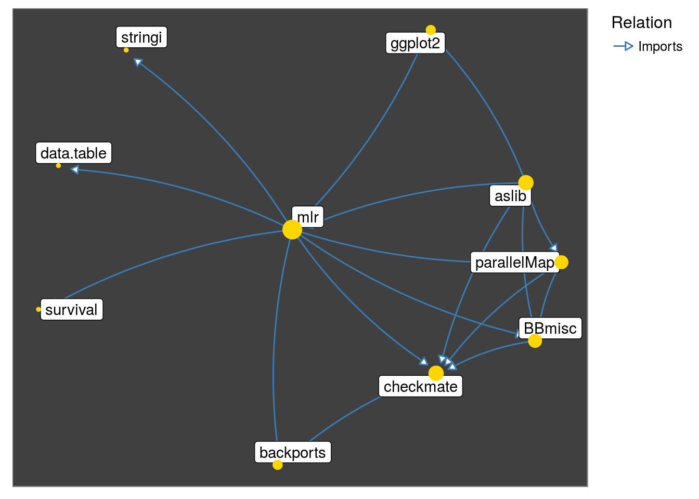
# observe the neighborhood of 'tidytext' package
get_neighborhood("tidytext") %>%
make_neighborhood_graph() %>%
plot()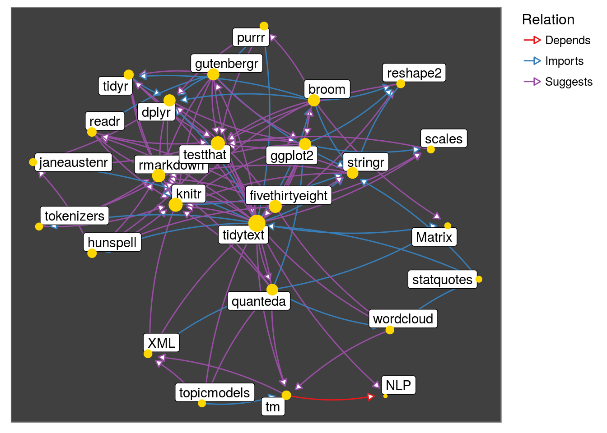
# interact with the neighborhood of 'tm' package
# legend does not appear in the vignette, but it appears directly
neighborhood_graph("tm") %>%
plotd3(700, 700)# which packages work as 'hubs' or 'authorities' in the above graph
neighborhood_graph("tidytext", type = "igraph") %>%
extract2(1) %>%
authority_score() %>%
extract2("vector") %>%
tibble(package = names(.), score = .) %>%
top_n(10, score) %>%
ggplot(aes(reorder(package, score), score)) +
geom_bar(stat = "identity") +
xlab("package") +
ylab("score") +
coord_flip()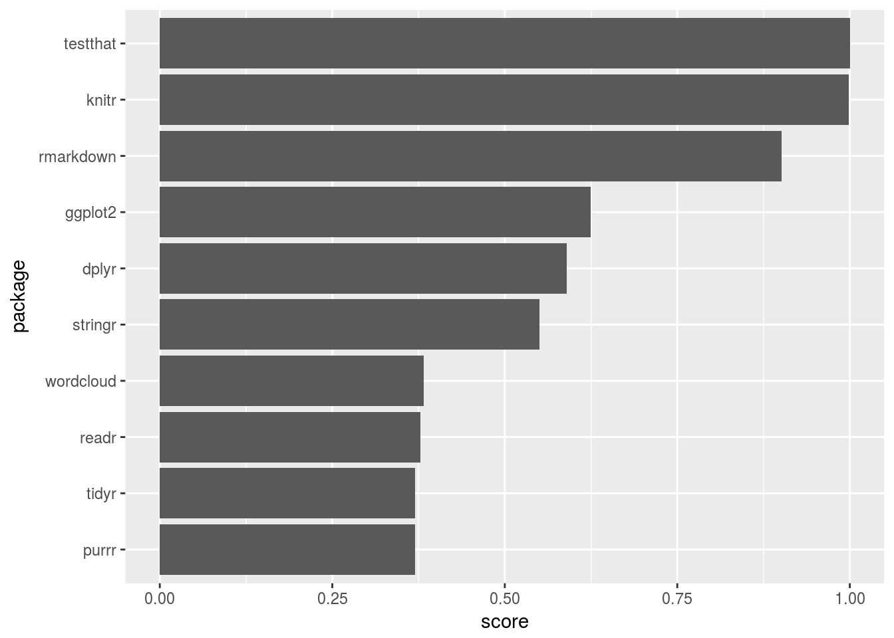
The package
pkggraphaims to provide a consistent and intuitive platform to explore the dependencies of packages in CRAN like repositories.
The package attempts to strike a balance between two aspects:
So that, we do not see trees for the forest nor see only a forest !
The important features of pkggraph are:
tibble (pkg_1, relation, pkg_2). The first row in the table below indicates that dplyr package ‘Imports’ assertthat package.get_imports(c("dplyr", "tidyr"))## # A tibble: 14 x 3
## pkg_1 relation pkg_2
## <chr> <fctr> <chr>
## 1 dplyr Imports assertthat
## 2 dplyr Imports utils
## 3 dplyr Imports R6
## 4 dplyr Imports Rcpp
## 5 dplyr Imports tibble
## 6 dplyr Imports magrittr
## 7 dplyr Imports lazyeval
## 8 dplyr Imports DBI
## 9 tidyr Imports tibble
## 10 tidyr Imports dplyr
## 11 tidyr Imports stringi
## 12 tidyr Imports lazyeval
## 13 tidyr Imports magrittr
## 14 tidyr Imports Rcpptibble. ex: get_reverse_depends
pkggraph object containing a network or a igraph object. ex: neighborhood_graph
plot method which uses ggnetwork package to generate a static plot.
plotd3 function uses networkD3 to produce a interactive D3 plot.
The five different types of dependencies a package can have over another are: Depends, Imports, LinkingTo, Suggests and Enhances.
init
Always, begin with init(). This creates two variables deptable and packmeta in the environment where it is called. The variables are created using local copy (Default) or computed after downloading from internet (when local = FALSE). It is suggested to use init(local = FALSE) to get up to date dependencies.
library("pkggraph")
init(local = FALSE)The repository argument takes CRAN, bioconductor and omegahat repositories. For other CRAN-like repositories not listed in repository, an additional argument named repos is required.
get familytibble
packages as their first argument.level argument (Default value is 1).get_imports("ggplot2")## # A tibble: 10 x 3
## pkg_1 relation pkg_2
## <chr> <fctr> <chr>
## 1 ggplot2 Imports digest
## 2 ggplot2 Imports grid
## 3 ggplot2 Imports gtable
## 4 ggplot2 Imports MASS
## 5 ggplot2 Imports plyr
## 6 ggplot2 Imports reshape2
## 7 ggplot2 Imports scales
## 8 ggplot2 Imports stats
## 9 ggplot2 Imports tibble
## 10 ggplot2 Imports lazyevalLets observe packages that ‘Suggest’ knitr.
get_reverse_suggests("knitr", level = 1)## # A tibble: 1,949 x 3
## pkg_1 relation pkg_2
## <chr> <fctr> <chr>
## 1 abbyyR Suggests knitr
## 2 ABC.RAP Suggests knitr
## 3 ABHgenotypeR Suggests knitr
## 4 AbSim Suggests knitr
## 5 ACMEeqtl Suggests knitr
## 6 acmeR Suggests knitr
## 7 acnr Suggests knitr
## 8 ACSNMineR Suggests knitr
## 9 adaptiveGPCA Suggests knitr
## 10 additivityTests Suggests knitr
## # ... with 1,939 more rowsBy setting level = 2, observe that packages from first level (first column of the previous table) and their suggestors are captured.
get_reverse_suggests("knitr", level = 2)## # A tibble: 4,670 x 3
## pkg_1 relation pkg_2
## <chr> <fctr> <chr>
## 1 abbyyR Suggests knitr
## 2 ABC.RAP Suggests knitr
## 3 ABCoptim Suggests covr
## 4 abctools Suggests ggplot2
## 5 abd Suggests ggplot2
## 6 abd Suggests Hmisc
## 7 ABHgenotypeR Suggests knitr
## 8 AbSim Suggests knitr
## 9 acebayes Suggests R.rsp
## 10 ACMEeqtl Suggests knitr
## # ... with 4,660 more rowsWhat if we required to capture dependencies of more than one type, say both
DependsandImports?
get_all_dependencies and get_all_reverse_dependencies
These functions capture direct and reverse dependencies until the suggested level for any subset of dependency type.
get_all_dependencies("mlr", relation = c("Depends", "Imports"))## # A tibble: 9 x 3
## pkg_1 relation pkg_2
## <chr> <fctr> <chr>
## 1 mlr Depends ParamHelpers
## 2 mlr Imports BBmisc
## 3 mlr Imports backports
## 4 mlr Imports ggplot2
## 5 mlr Imports stringi
## 6 mlr Imports checkmate
## 7 mlr Imports data.table
## 8 mlr Imports parallelMap
## 9 mlr Imports survivalget_all_dependencies("mlr", relation = c("Depends", "Imports"), level = 2)## # A tibble: 292 x 3
## pkg_1 relation pkg_2
## <chr> <fctr> <chr>
## 1 ada Depends rpart
## 2 adabag Depends rpart
## 3 adabag Depends mlbench
## 4 adabag Depends caret
## 5 bartMachine Depends rJava
## 6 bartMachine Depends bartMachineJARs
## 7 bartMachine Depends car
## 8 bartMachine Depends randomForest
## 9 bartMachine Depends missForest
## 10 batchtools Depends data.table
## # ... with 282 more rowsObserve that ada ‘Depends’ on rpart.
Sometimes, we would like to capture only specified dependencies recursively. In this case, at second level, say we would like to capture only ‘Depends’ and ‘Imports’ of packages which were dependents/imports of mlr. Then, set strict = TRUE.
get_all_dependencies("mlr"
, relation = c("Depends", "Imports")
, level = 2
, strict = TRUE)## # A tibble: 28 x 3
## pkg_1 relation pkg_2
## <chr> <fctr> <chr>
## 1 mlr Depends ParamHelpers
## 2 BBmisc Imports checkmate
## 3 checkmate Imports backports
## 4 ggplot2 Imports digest
## 5 ggplot2 Imports grid
## 6 ggplot2 Imports gtable
## 7 ggplot2 Imports MASS
## 8 ggplot2 Imports plyr
## 9 ggplot2 Imports reshape2
## 10 ggplot2 Imports scales
## # ... with 18 more rowsNotice that ada was ’Suggest’ed by mlr. That is why, it appeared when strict was FALSE(default).
What if we required to capture both dependencies and reverse dependencies until a specified level?
get_neighborhood
This function captures both dependencies and reverse dependencies until a specified level for a given subset of dependency type.
get_neighborhood("hash", level = 2)## # A tibble: 60 x 3
## pkg_1 relation pkg_2
## <chr> <fctr> <chr>
## 1 BOG Depends hash
## 2 COMBIA Depends hash
## 3 GABi Depends hash
## 4 HAP.ROR Depends hash
## 5 neuroim Depends hash
## 6 orderbook Depends hash
## 7 rpartitions Depends hash
## 8 Rtextrankr Depends KoNLP
## 9 CITAN Imports hash
## 10 covr Imports crayon
## # ... with 50 more rowsget_neighborhood("hash", level = 2) %>%
make_neighborhood_graph %>%
plot()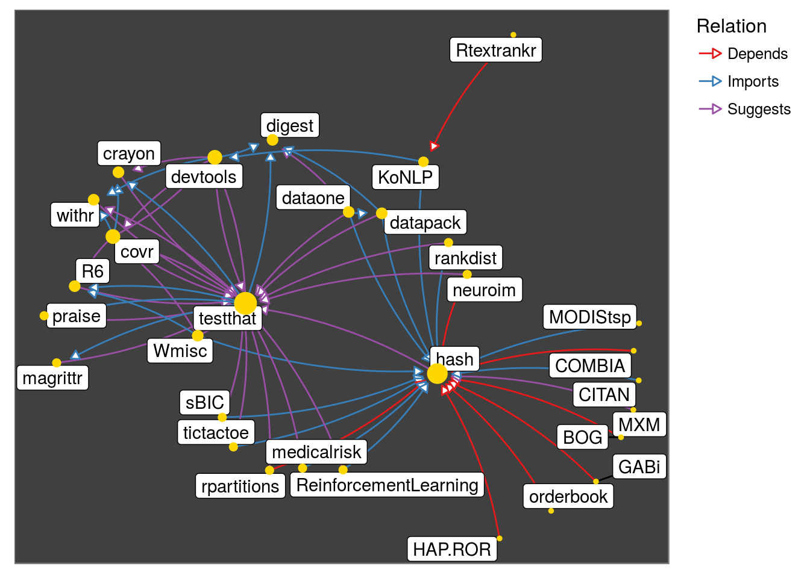
Observe that testthat family appears due to Suggests. Lets look at Depends and Imports only:
get_neighborhood("hash"
, level = 2
, relation = c("Imports", "Depends")
, strict = TRUE) %>%
make_neighborhood_graph %>%
plot()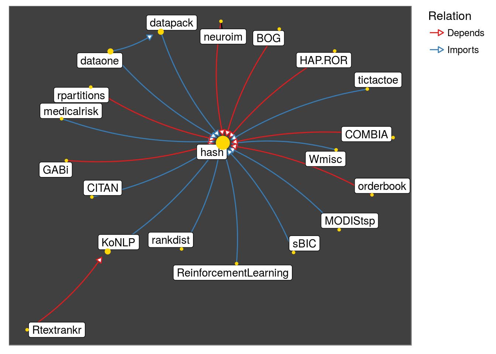
Observe that the graph below captures the fact: parallelMap ‘Imports’ BBmisc
get_neighborhood("mlr", relation = "Imports") %>%
make_neighborhood_graph() %>%
plot()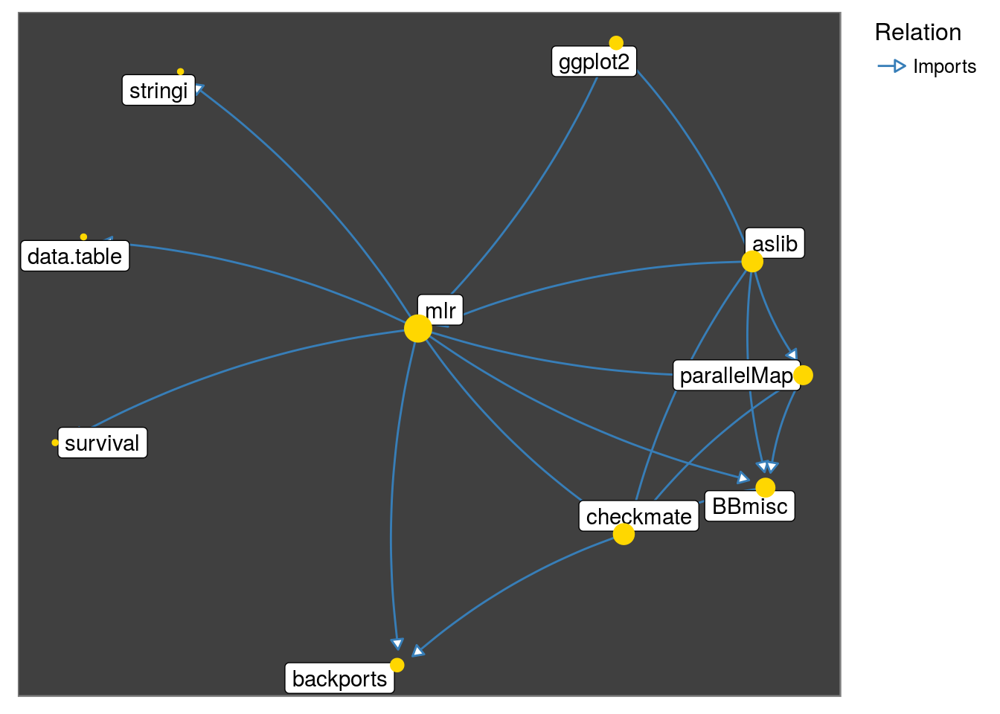
get_neighborhood looks if any packages until the specified level have a dependency on each other at one level higher. This can be done turned off by setting interconnect = FALSE.
get_neighborhood("mlr", relation = "Imports", interconnect = FALSE) %>%
make_neighborhood_graph() %>%
plot()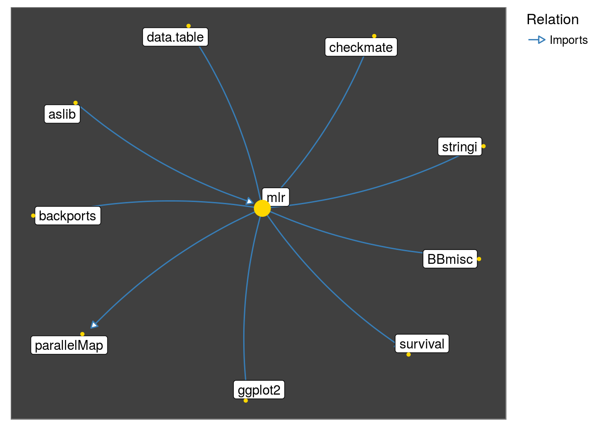
neighborhood_graph and make_neighborhood_graph
neighborhood_graph creates a graph object of a set of packages of class pkggraph. This takes same arguments as get_neighborhood and additionally type. Argument type defaults to igraph. The alternative is network.neighborhood_graph("caret", relation = "Imports") %>%
plot()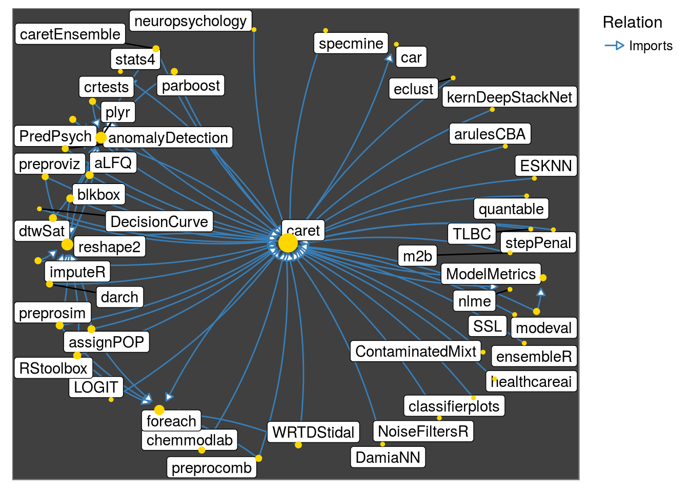
make_neighborhood_graph accepts the output of any get_* as input and produces a graph object.
Essentially, you can get the information from
get_function after some trial and error, then create a graph object for further analysis or plotting.
get_all_reverse_dependencies("rpart", relation = "Imports") %>%
make_neighborhood_graph() %>%
plot()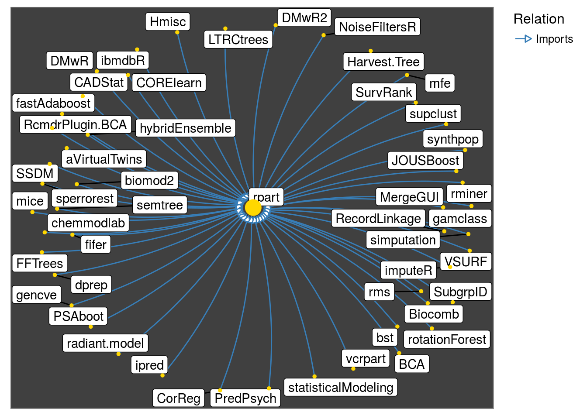
relies
For quick dependency checks, one could use infix operators: %depends%, %imports%, %linkingto%, %suggests%, %enhances%.
"dplyr" %imports% "tibble"## [1] TRUEA package A is said to rely on package B if A either ‘Depends’, ‘Imports’ or ‘LinkingTo’ B, recursively. relies function captures this.
relies("glmnet")[[1]]## [1] "Matrix" "utils" "foreach" "methods" "codetools"
## [6] "iterators" "graphics" "grid" "stats" "lattice"
## [11] "grDevices"# level 1 dependencies of "glmnet" are:
get_all_dependencies("glmnet", relation = c("Imports", "Depends", "LinkingTo"))[[3]]## [1] "Matrix" "foreach""glmnet" %relies% "grid"## [1] TRUEreverse_relies("tokenizers")[[1]]## [1] "ptstem" "tidytext" "statquotes"plot and its handlesplot produces a static plot from a pkggraph object. The available handles are:
pkggraph::neighborhood_graph("hash") %>%
plot()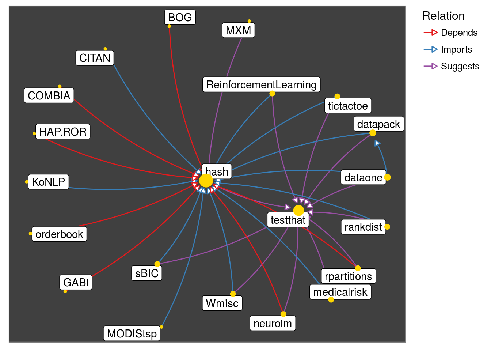
pkggraph::neighborhood_graph("hash") %>%
plot(nodeImportance = "in", background = "white")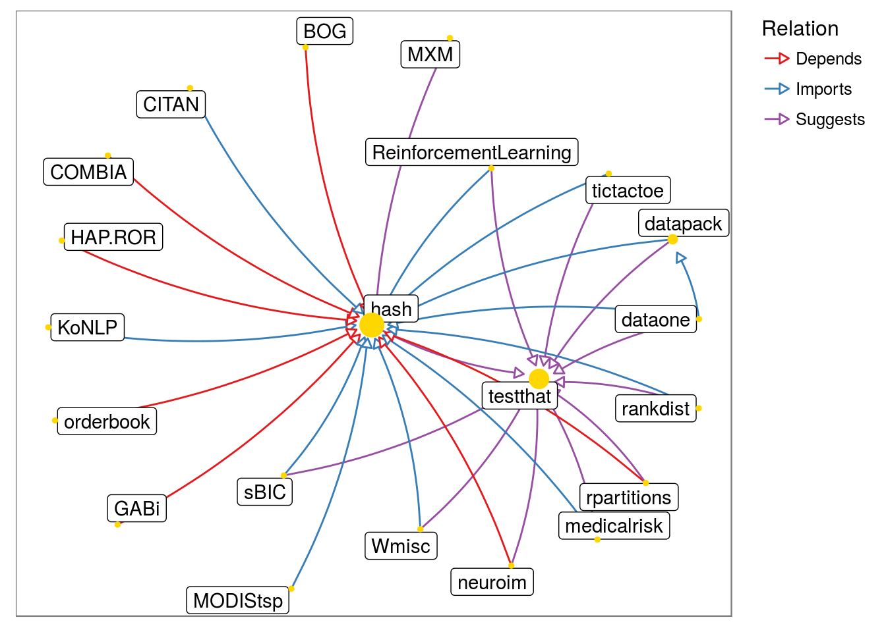
pkggraph::neighborhood_graph("hash") %>%
plot(nodeImportance = "none", background = "white")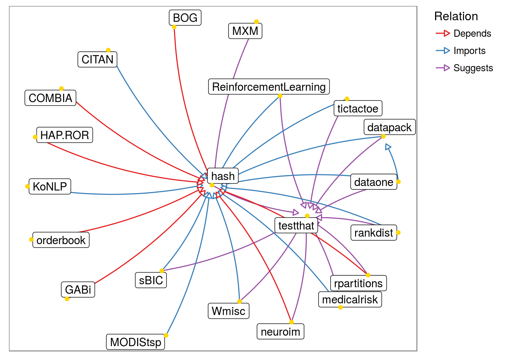
plotd3
For interactive exploration of large graphs, plotd3 might be better than static plots. Note that,
# legend does not appear in the vignette, but it appears directly
plotd3(neighborhood_graph("tibble"), height = 1000, width = 1000)Package authors Srikanth KS and Nikhil Singh would like to thank
Rcore, Hadley Wickham for tidyverse framework and the fantasticRcommunity!